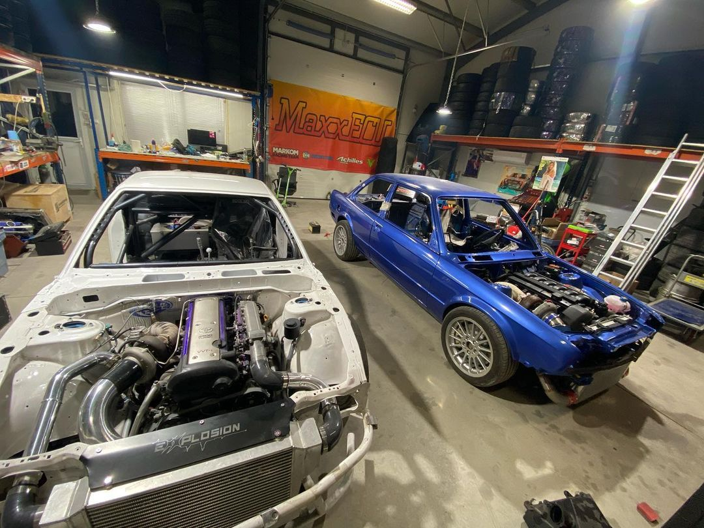
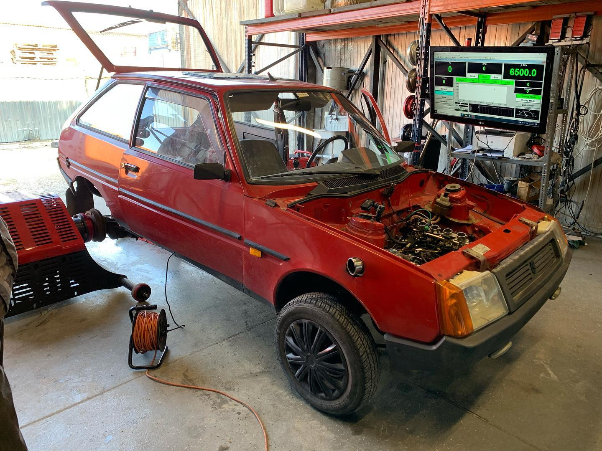

A Hub Dyno Budapest egy tuninggal, teljesítményméréssel és ECU programozással foglalkozó cég. A műhely erősségei, az ország legerősebb teljesítménymérő padja és az ország legjobb ECU programozója. Gyáli telephelyünkön sokféle projektet vállalunk, az egyszerű utcai autók programozásától egészen a legkihegyezettebb versenygépekig.


Kapcsolat a MAxxECU – val
A Hub Dyno Budapest a MaxxECU hivatalos magyarországi forgalmazója. A két cég között szoros kapcsolat épült ki az utóbbi időkben, a termékeik forgalmazásán kívül beépítjük őket, valamint támogatást biztosítunk az ezekkel felszerelt járművekre. Emil, a programozónk akár távoliról is képes diagnosztizálni a problémát és segítséget nyújtani.